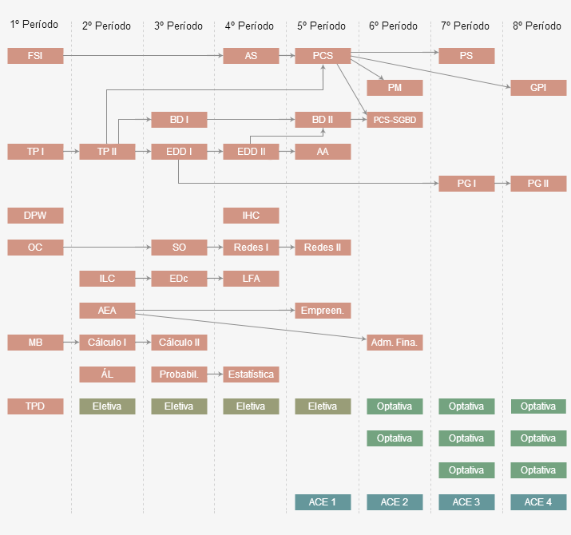

A estrutura curricular do curso de BSI está organizada em dois núcleos: um de formação básica, coberto nos quatro primeiros períodos, e um de formação profissional, coberto nos quatro últimos períodos.
O Núcleo Básico, constando de 1.710 horas-aula, contém disciplinas obrigatórias de Ciências da Computação, Matemática, Estatística e Ciências Administrativas, além de disciplinas obrigatórias de formação profissional nas áreas de Organização de Computadores, Sistemas Operacionais, Redes de Computadores, Engenharia de Software, Sistemas de Informação e Banco de Dados. O objetivo é dar ao aluno uma formação generalista técnico-teórica que dê base para cursar as disciplinas do Núcleo Profissional nos quatro períodos finais, como também dê a formação necessária para futuramente cursar programas de pós-graduação dando prosseguimento à sua educação continuada ao longo da sua vida profissional.
O Núcleo Profissionalizante, com 1.530 horas-aula, contém as disciplinas optativas, que são aquelas em que o aluno escolhe cursar dentre as opções ofertadas no curso. As disciplinas optativas abordam conteúdos específicos, geralmente atuais e aplicados, visando possibilitar o aluno se aprofundar nas áreas de conhecimento em que pretente atuar profissionalmente. Nesse núcleo também constam as disciplinas Atividades Curriculares de Extensão (ACE), voltadas, por exemplo, para Estágio Supervisionado. Também estão as disciplinas de Projeto Final do Curso (PG - projeto de graduação) em que o aluno elabora seu TCC.